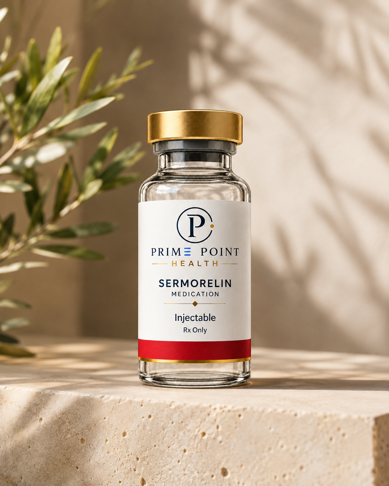

Stimulates
growth hormone
Sermorelin mimics GHRH, a signal that prompts the pituitary gland to release your body’s own growth hormone.

How Sermorelin Works
Sermorelin supports natural growth hormone signaling to improve recovery, repair, and sleep over time.
Stimulates the pituitary to
release growth hormone
Increases natural GH
production during sleep
Supports muscle repair
and recovery processes
Product illustration. Actual packaging may vary.
Metabolic Health
Starting from $224 $249 10% off
Supports natural growth hormone and unlocks better sleep, recovery, and lean muscle.
Prescription only when clinically appropriate. Eligibility and results vary.
Sermorelin is a synthetic peptide that mimics growth hormone-releasing hormone (GHRH) to naturally boost the body’s own growth hormone production, helping increase muscle, metabolism, and overall well-being.
Sermorelin is a peptide that works by stimulating the pituitary gland (a small gland in your brain) to produce and release more growth hormone (HGH) naturally. Instead of injecting synthetic growth hormone directly, Sermorelin encourages your body to make its own, keeping things more natural and balanced.
Improved Body Composition: Over three to six months of consistent use, therapy is linked to reduced belly (visceral) fat and support for lean muscle mass.
Increased Energy: Many people notice higher stamina and less daytime fatigue.
Better Sleep: Users often report deeper, more restful sleep within the first one to two weeks, as growth hormone naturally surges during deep sleep
Faster Recovery: It can help reduce muscle soreness and speed up repair after workouts or physical activity
Sermorelin mimics GHRH, a signal that prompts the pituitary gland to release your body’s own growth hormone.
Growth hormone plays a role in muscle metabolism and tissue maintenance. Your clinician considers this pathway alongside your recovery goals.
Growth hormone release is closely linked to deep sleep, which helps support restoration, energy production, and recovery.

The Prime Point quality standard
Before medication reaches a Prime Point patient, it is supported by a layered quality process designed to verify what is inside, protect its purity, and hold every pharmacy partner to a consistently high standard.
We test for potency to ensure every medication contains the correct concentration of active ingredients.
We ensure our pharmacy partners test for sterility so medications are free of foreign organisms, pathogens, and bacteria.
We test for endotoxicity to confirm medications adhere to established endotoxin safety recommendations.
Every medication is independently third-party tested, and every pharmacy is rigorously vetted before any partnership begins.